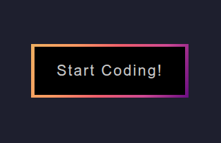
A colorful button built using HTML and CSS with simple styling and hover effects.
View Demo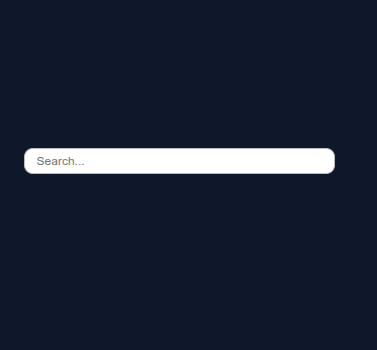
A responsive expanding search bar built using HTML and CSS that smoothly expands when focused.
View Demo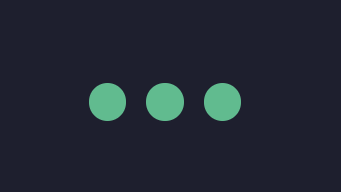
A creative loading animation built using HTML and CSS with smooth keyframe animations.
View Demo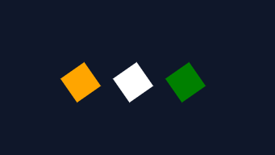
A CSS loading animation demonstrating smooth motion using keyframes and transforms.
View Demo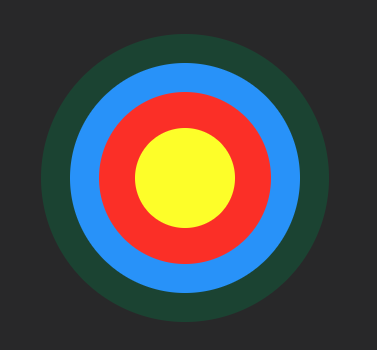
An archery target recreated using HTML and CSS with concentric circles and modern layout techniques.
View Demo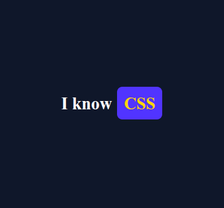
A word carousel built using HTML and CSS that cycles through text with smooth animations.
View Demo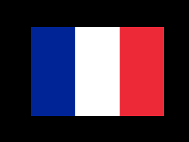
A recreation of the French flag using HTML and CSS with three equal vertical stripes.
View Demo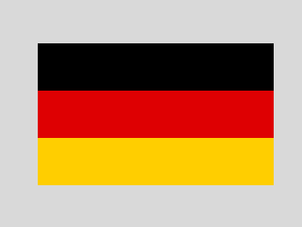
A recreation of the German flag using HTML and CSS with three equal horizontal stripes.
View Demo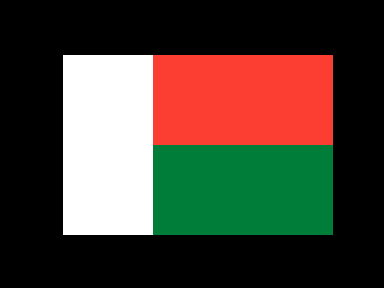
A recreation of the Madagascar flag using CSS Grid for an accurate flag layout.
View DemoA recreation of the Swiss flag using HTML and CSS with a centered white cross.
View DemoA recreation of the Japanese flag using HTML and CSS with a centered red circle.
View Demo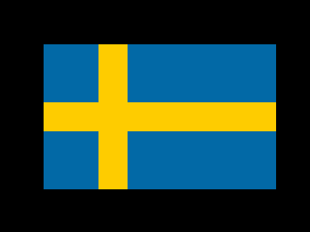
A recreation of the Swedish flag using HTML and CSS with an off-center Nordic cross.
View DemoA recreation of the Niger flag using HTML and CSS with three horizontal stripes and a centered orange disc.
View Demo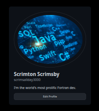
A responsive GitHub profile UI built with HTML and CSS, featuring a clean layout inspired by GitHub's profile page.
View Demo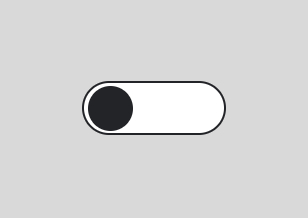
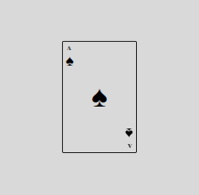
A detailed recreation of the Ace of Spades playing card using HTML and CSS.
View Demo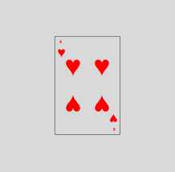
A CSS recreation of the Four of Hearts playing card with accurately positioned suit symbols and responsive styling.
View Demo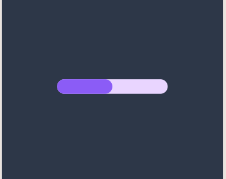
An interactive progress bar built with HTML and CSS, featuring a clean design and smooth visual updates.
View Demo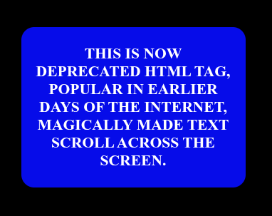
A CSS-powered flip card inspired by Jeopardy!, using 3D transforms to reveal the answer when hovered.
View Demo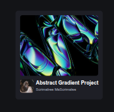
A responsive CodePen-inspired profile tile built with HTML and CSS, featuring a clean card layout and modern styling.
View DemoA smooth CSS loading animation featuring modern motion effects and seamless looping.
View Demo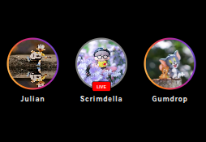
A responsive Instagram-style stories built with HTML and CSS, featuring circular story thumbnails and a clean, modern interface.
View Demo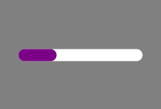
An animated progress bar created with HTML and CSS, featuring smooth fill animations, percentage indicators, and a responsive design.
View Demo